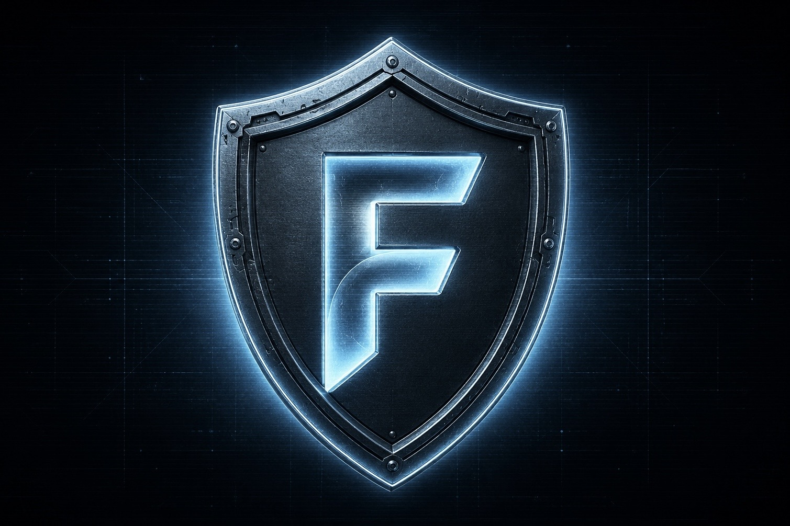
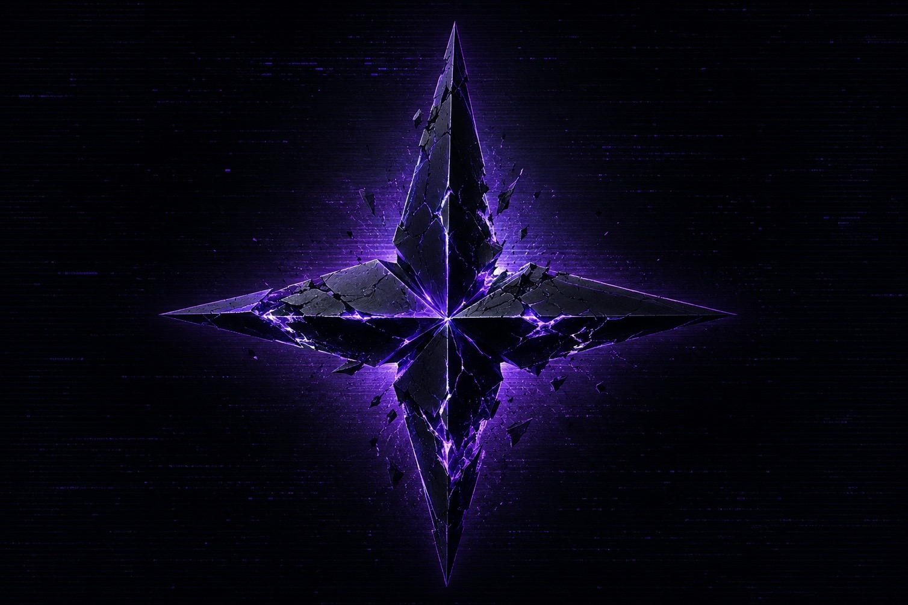

← НА ГЛАВНУЮ
SYS.ACCESS.GRANTED // FACTION REGISTRY
⚔️
ФРАКЦИИ
УРОВЕНЬ ВЛИЯНИЯ: 15
ЕДИНАЯ АМЕРИКА
Технократическая сверхдержава, удерживающая контроль над полушарием.
PWR
15
УРОВЕНЬ ВЛИЯНИЯ: 14
ТЕНЕБРИОН
Теократический абсолютизм, воздвигнутый на руинах веры и тьмы.
PWR
14

УРОВЕНЬ ВЛИЯНИЯ: 12
FORGE
Прогресс, технологическое развитие и восстановление справедливости.
PWR
12
УРОВЕНЬ ВЛИЯНИЯ: 10
АРКАДИЯ
Технократическая меритократия под непроницаемым Силовым Куполом.
PWR
10

УРОВЕНЬ ВЛИЯНИЯ: 10
РАКШАСЫ
Энтропия, контролируемый хаос и социальный дарвинизм.
PWR
10
УРОВЕНЬ ВЛИЯНИЯ: 6
ТИХАЯ ГАВАНЬ
Гедонистический изоляционизм под защитой абсолютного контроля над водой.
PWR
6
СТАТУС: АНАРХИЯ
БЕЛАЯ ЗОНА
Радиоактивные пустоши, территории малых фракций и забытых богом городов.
PWR
—